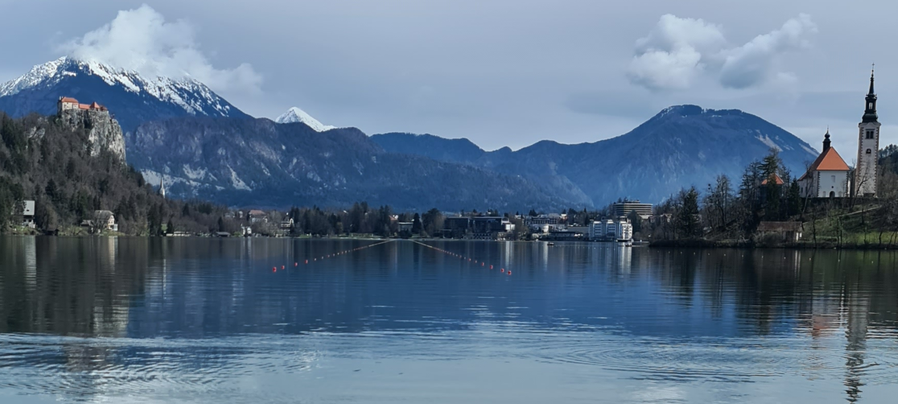

Veslanje je športna aktivnost, ki ima dolgo zgodovino in korenine segajo v antiko. V preteklosti je bilo veslanje pomembno za transport in ribolov ter za vojaške namene. Danes pa je veslanje priljubljena športna aktivnost, ki se izvaja v različnih oblikah, kot so rekreativno veslanje, turistično veslanje, veslanje na mirnih in divjih vodah ter tekmovalno veslanje.
Rekreativno veslanje se izvaja predvsem za zabavo in sprostitev na prostem. Ljudje se odločajo za veslanje, ker je to ena najbolj celostnih oblik vadbe, saj pri veslanju sodelujejo skoraj vsi mišični sklopi. Veslanje lahko izvajamo na različnih vodnih površinah, od rek in jezer do morij, in lahko traja od nekaj minut do nekaj ur. Rekreativno veslanje je odlična aktivnost za družine in prijatelje, ki se želijo sprostiti v naravi, hkrati pa aktivno preživeti svoj prosti čas.
Turistično veslanje se izvaja na različnih destinacijah po svetu in ponuja edinstveno izkušnjo raziskovanja novih krajev z vodne perspektive. To je odlična priložnost za raziskovanje skritih kotičkov, ki so dostopni le z vode, in opazovanje naravnih lepot in živalskega sveta.
Veslanje na mirnih vodah se izvaja na mirnih in gladkih vodah, kot so jezera in reke, in je priljubljena oblika rekreativnega veslanja. To je odlična priložnost za uživanje v naravi, brez potrebe po izkušnjah z veslanjem na divjih vodah.
Veslanje na divjih vodah se izvaja na divjih vodah, kot so brzice in reke z močnim tokom, in je bolj adrenalinska oblika veslanja. Ta oblika veslanja zahteva izkušnje in veščine veslanja na divjih vodah ter ustrezno opremo, kot so čelade, rešilni jopiči in vesla.
Tekmovalno veslanje je priljubljena oblika športa, ki se izvaja v različnih disciplinah, kot so enojni, dvojni in štiripomenski čolni ter osmerci. Tekmovalno veslanje poteka na različnih razdaljah, od 500 metrov za najmlajše do 2000 metrov za starejše, in vključuje tako posameznika kot ekipe. Pri tekmovalnem veslanju je pomembna hitrost, moč in vzdržljivost, pa tudi dobra koordinacija in taktika ekipe.
Stran je oblikovana posebej za veslače in vse, ki želijo izvedeti kaj o njem kot športu samemu, v strani bo zajeto le veslanje ne pa tudi kajakaštvo in druge podobnosti, namen strani je učenje o veslanju.
Spletna stran aRow je brezplačna za uporabo.